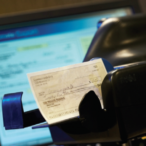

Online Cash Management
Explore tools for account balances, payroll, ACH, wires and payments.
Explore cash managementLOCAL EXPERTISE. YOUR NEXT CHAPTER.
From everyday transactions to the reserves you’re building for tomorrow, find an account that fits the way your business works.
EXPLORE ACCOUNTS
Choose an account to see its opening deposit, balance requirements, features and charges.
Non-interest checking
Everyday business activityKeep day-to-day transactions together in an account designed for lower activity.
No monthly service charge with a $5,000 average monthly balance.
| Activity | Included | Additional charge |
|---|---|---|
| Checks paid | First 30 | $0.20 each thereafter |
| ACH credits/ACH debits | First 30 | $0.40 each thereafter |
| Deposits | First 10 | $1.25 each thereafter |
| Checks deposited | First 30 | $0.10 each thereafter |
| Currency deposited/withdrawn | First $5,000 | $1.25 per additional $1,000 |
Non-interest checking
More account activityMake room for more deposits and transactions as your business activity grows.
No monthly service charge with a $20,000 average monthly balance.
| Activity | Included | Additional charge |
|---|---|---|
| Checks paid | First 100 | $0.20 each thereafter |
| ACH credits/ACH debits | First 100 | $0.40 each thereafter |
| Deposits | First 25 | $1.25 each thereafter |
| Checks deposited | First 100 | $0.10 each thereafter |
| Currency deposited/withdrawn | First $25,000 | $1.25 per additional $1,000 |
Non-interest checking
Higher volume or specialized needsBring higher transaction volumes and specialized banking needs into one conversation.
Monthly earnings credits can offset service charges. Account services are tailored to the business relationship.
An earnings credit offsets service charges; this account does not pay deposit interest.
Non-interest checking
Nonprofit organizationsKeep your organization’s banking focused on the work you do for the community.
A balance below $50 or more than four deposits in a month incurs the $10 monthly fee.
Interest-bearing checking
Interest with limited transactionsKeep business reserves accessible while earning interest on qualifying balances.
No monthly fee with a minimum balance of $2,500.
| Activity | Included | Additional charge |
|---|---|---|
| Debits per statement period | First 6 | $10 per additional debit |
Interest-bearing savings
Building business reservesSet money aside for planned expenses, future opportunities and the unexpected.
No service fee with a minimum balance of $300.
Transactions are limited. Contact a banker for current rates and transaction details.
WORKING TOGETHER
Connect your account with tools for managing cash flow, making deposits and accepting payments.
Explore tools for account balances, payroll, ACH, wires and payments.
Explore cash management
Make electronic check deposits from your business and reduce trips to a branch.
Explore remote depositsFind payment acceptance options and support for the way you serve your customers.
Explore merchant servicesA LITTLE MORE CLARITY
Start here, or connect with a banker for help with your specific needs.
Basic Business Checking has lower included transaction allowances. Solutions Business Checking includes more checks, ACH activity and deposits. For higher volumes or specialized requirements, talk with a banker about Analyzed Business Checking.
Balance and activity conditions depend on the account. Basic and Solutions use average monthly balance requirements; Community Service Checking also has deposit conditions. Business Money Market and Business Savings have minimum balance requirements. Savings charges, when applicable, are quarterly. Review each account above for the exact conditions and additional transaction charges.
Community Service Checking is designed for nonprofit organizations. It allows up to four deposits a month, each with up to 50 checks. Its balance and monthly fee conditions are shown in the account details.
Business Money Market is interest-bearing checking, and Business Savings is interest-bearing savings. Money Market pays market-rate interest on balances over $2,500. Savings interest is variable, compounded daily and credited quarterly. Contact a banker for current rates.
Analyzed Business Checking does not pay deposit interest. It provides a monthly earnings credit that can offset service charges, with services tailored to the overall business relationship.
Contact our team to discuss the account and services your business needs. A banker can explain opening requirements, current terms and the next steps. You can also call (909) 393-8880 or visit one of our branches.
LET’S GET STARTED
Tell us what you’re working toward. Our local team can walk you through the accounts and services that fit your next steps.